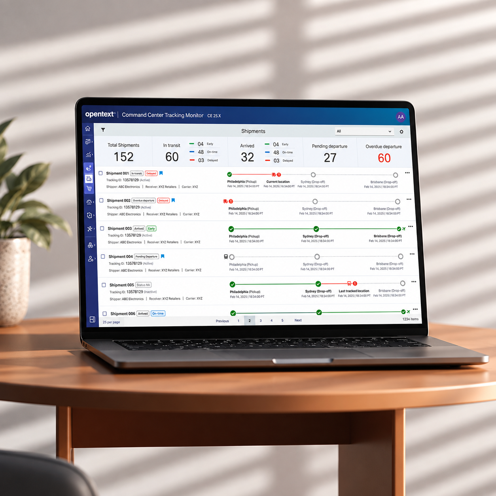
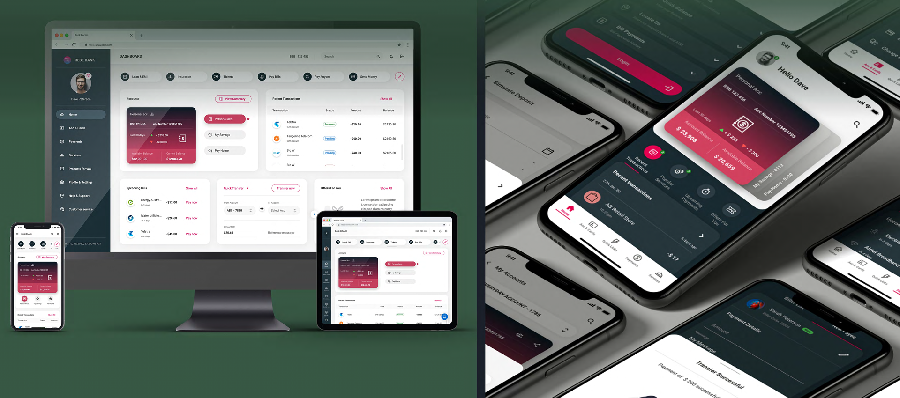
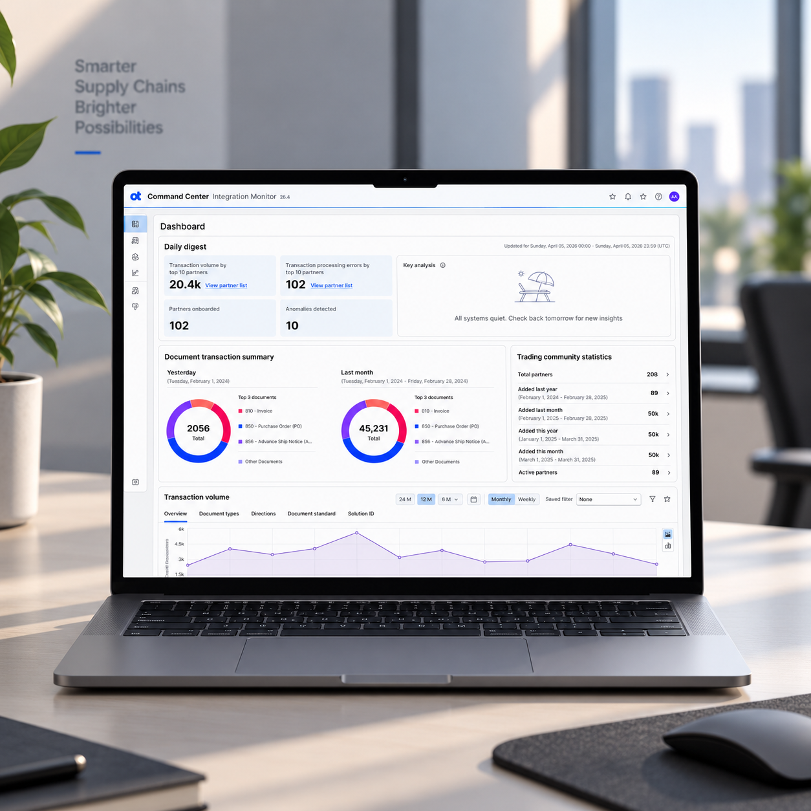

01 / Case study
Tracking Monitor
Connect shipment activity to the orders, commitments, and customers behind it so enterprise teams can move from signal to decision.
Read case study ↗Work / Case studies and concepts
Four case studies and one concept project across enterprise collaboration, operational monitoring, supply chain, and digital banking.

Connect shipment activity to the orders, commitments, and customers behind it so enterprise teams can move from signal to decision.
Read case study ↗
Redesigning mobile and web banking journeys across onboarding, accounts, and payments for a leading Australian bank.
Read case study ↗
Help operations teams move from an enterprise signal to partner-level investigation with context at each step.
Read case study ↗
Keep review comments connected to the exact engineering document context, discussion, and resolution.
Read case study ↗A redesign concept exploring a more personal travel experience.
View on Behance ↗